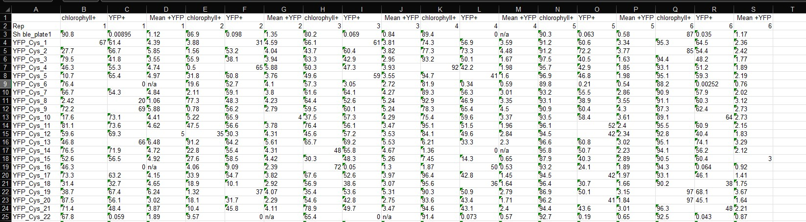

Working with your data - Elisa
Datasets and scripts
- Go to the github page to get the scripts and datasets: github.com/KarenGoncalves/R_class_examples
- Excel files need to be downloaded into your computer to be read by R
- Download the scripts. We will go through them and you can add comments and run new commands to test the script and dataset.
For all datasets, we will use the packages tidyverse and readxl
Elisa’s dataset
Original dataset

…
Issues:
- Column names with forbidden symbols (space and +)
- Multiple columns with same name
- Row information in column (Rep, line 2)
- Missing metadata
Correcting original dataset
Put each Rep in a separate sheet
Rename column names
Create metadata sheet
Check what symbol is used to represent NA
Corrected dataset
Prepare script
#### Install and load packages ####
# start by creating a vector with all the packages you need
pkgs = c("readxl", "tidyverse", "ggpubr")
# We check which packages are NOT (!) installed
pkgs.To.Install = ! pkgs %in% installed.packages()
# any() checks if there is at least one TRUE in the vector
if (any(pkgs.To.Install)) install.packages(pkgs[pkgs.To.Install])
for (curPkg in pkgs) library(curPkg, character.only = T)
# curPkg is a variable that takes the value of each element in pkgs
# Every time the function library() is run, curPkg changes value- readxl - deal with excel file
- tidyverse - prepare, sort, rearrange and plot data
- ggpubr - put multiple plots into a single figure
Set basic variables
- Get script here
- Get data here and save it in your project folder as Inputs/ELISA_YFP_Cys & YPF clones_EF20230330.xls”
#### Set basic variables ####
# Set the name of the input file and
ElisaFile = "Inputs/ELISA_YFP_Cys & YPF clones_EF20230330.xls"
columnNames = c("chlorophyll_pos", "YFP_pos", "Mean_YFP_pos")
colors = c("black", "blue", "forestgreen",
"red", "magenta", "orange") # six
colors for the six technical replicates
chlorophyll_threshold = 75 # Minimum % of chlorophyll positive cells (decided by data provider - Elisa)
sheetsElisa = excel_sheets(ElisaFile) # List of sheet namesRead the excel file
We will use the function lapply to create a list containing each of the sheets in the input file
Think of lapply as a for loop: repeat the same function for a list of objects and returns the output of each one as an element of a list
lapply(list, function(variable_name))
functioncan be directly the function you want to applylapply(iris[, 1:4], mean)# calculate the mean for each column
function(variable_name)or\(variable_name)is useful when you need to use a variable name in functionlapply(1:4, function(variable_name) mean(iris[,variable_name]))- If the function we want to apply spans several lines, we put it in
{}
#### Read input file and prepare it ####
Elisa_Chlorophyll_YFP = lapply(sheetsElisa, \(sheet) {
# All the sheets will be saved into a list
currentSheet = read_excel(ElisaFile, sheet = sheet, na = "n/a")
if (sheet != "Metadata") { # Just execute the code inside the {} if sheet is not "Metadata"
# Create a column to indicate the technical replicates (name of the sheet)
currentSheet$Technical_replicate = sheet
# And indicate that the first column has the clone names
names(currentSheet)[1] = "Clone"
}
currentSheet
})
names(Elisa_Chlorophyll_YFP) = sheetsElisaManipulate the data
!=- comparison, means NOT EQUAL TOdo.callis used here to join the elements of a list using the function “rbind”rbindwill BIND data.frames by Rows (one table is pasted under the the other)
# Specify which sheet doesn't contain measurements
notMetadata = sheetsElisa != "Metadata"
# Put all the sheets containing measurements into one table
Elisa_Chlorophyll_YFP_all =
do.call(what = "rbind", Elisa_Chlorophyll_YFP[notMetadata])sapply- same as lapply, but the result is a named vector OR named list- if you expect a list or data.frame, test first to see if you get the expected output format, if not, use lapply
- You can select elements of a named list as:
named.list$element1ornamed.list[[element1]]ornamed.list[[1]] gsub("_\\d+$", "", cloneName)no matter the value of “cloneName”, we remove the number of the clone:- check the tab pattern
# Create a column with the construct name
Elisa_Chlorophyll_YFP_all$Construct =
sapply(Elisa_Chlorophyll_YFP_all$Clone, \(cloneName) {
# Remove the underscore and number from the clone name to get the construct
pattern = paste0("^", gsub("_\\d+$", "", cloneName), "$")
# Get the construct name from the metadata
cloneGroup = grep(pattern, Elisa_Chlorophyll_YFP$Metadata$Name)
construct = Elisa_Chlorophyll_YFP$Metadata$Type[cloneGroup]
# If the construct name in the metadata has the word negative, replace the name with EV
ifelse(grepl("Negative", construct), "EV", construct)
}) |>
factor(levels = c("EV", "YFP", "PtCys_YFP"))Regular expression is a way to work with text
grep - similar to
CTRL+Fgsub/sub - similar to
replaceorCTRL+HPatterns (what to search)
- any digit:
"\\d" - any word character (letters, _, digits):
"\\w" - any character (including special symbols and space):
"." - If you want to create your set of characters allowed in the pattern, just use
[]- I want to search only uppercase letters:
"[A-Z]" - Special symbols:
"[\\.\\*\\-]"(put two backslashes\\before the symbol)
- I want to search only uppercase letters:
- any digit:
Quantifiers (how many times the pattern occurs)
- Specific number of times:
A{X}, where X is the number of times A appears - Between X and Y times:
e{X,Y}, e appears at least X times, at most Y times (in tandem) - At least X times, but can be more:
T{X,}(nothing after the “,” means INFINITY) - At least once, but can be more:
N+ - May not appear, may appear multiple times:
C*
- Specific number of times:
Anchors
- Text MUST start with the pattern “ATG”:
"^ATG"(start pattern with^) - Transcript must end with stop codon:
"T[GA][GA]$"(end pattern with$)
- Text MUST start with the pattern “ATG”:
grepl - returns TRUE if the pattern is found, FALSE if not
ifelse: if TRUE, do this, else do that (si VRAI, fait ça, sinon fait une autre chose)
Thus: IF the word “Negative” is found in the variable ‘construct’, return “EV”, if not return the variable ‘construct’
Plots
Make a vector with the labels of the y-axis for each plot, naming the elements so that we can select them
yLabs = c(chlorophyll = "Chlorophyll-positive cells (%)",
YFP = "YFP-positive cells (%)")
yLabs["chlorophyll"]plots = lapply(c("chlorophyll", "YFP"), \(plotName) {
# column is either chlorophyll_pos or YFP_pos
colName = paste0(plotName, "_pos")
# Make vector with the names of the columns to use in the plot
selectedCols = c("Construct", "Technical_replicate", colName)
plotData = Elisa_Chlorophyll_YFP_all[, selectedCols]
# We rename the column with values to plot so that we can select it in ggplot
names(plotData)[3] = "column"
ggplot(plotData,
aes(x = Construct,
y = column,
color = Technical_replicate)) +
geom_point(position = "jitter", size = 0.5) +
scale_color_manual(values = colors,
name = "Technical\nReplicate") +
scale_y_continuous(limits = c(0, 100),
breaks = seq(0, 100, 25)) +
labs(x = "Strain", y = yLabs[plotName])
})
# Name the plots in the list
names(plots) = paste0(c("chlorophyll", "YFP"), "_all")geom_point(position = "jitter", size = 0.5)position = "jitter": points will be spread (try removing this)size = 0.5: size of each point (choice of size is dependent on total number of points, size of the plot, resolution, check with your data)
scale_color_manual(values = colors, name = "Technical\nReplicate")- Colors used will be the ones in the vector colors
- “” means line break, so “Technical” and “Replicate” will be in separate lines
scale_y_continuous(limits = c(0, 100), breaks = seq(0, 100, 25))- limits specifies where the axis starts and ends
- breaks specifies where the marks in the axis go.
ANOVA
ANOVA asks the question: are there differences between the groups?
Tukey (post-hoc test) asks: which groups are different?
:::{.panel-tabset}
ANOVA test
The ANOVA test in R is a function that takes a formula, eg: aov(Sepal.Length ~ Species, data = iris)
- The formula splits the Sepal.Length column in relation to the values in the column Species.
#### Anova ####
# Test if there is difference between the technical replicates
(anova_techReps_chlorophyll =
aov(chlorophyll_pos ~ Technical_replicate, Elisa_Chlorophyll_YFP_all))
# Check with summary if the pvalue < 0.05
summary(anova_techReps_chlorophyll)Tukey
TukeyHSD(Tukey Honest Significant Differences) takes as input the result fromaovand returns a list.- The comparisons are stored in an object with the name of the group: the comparisons from
iris_SL <- aov(Sepal.Length ~ Species, data = iris) |> TukeyHSD()are stored iniris_SL$Species>- Note that this is a matrix, not a data.frame. you cannot select the columns with$
-The p-value is stored in the forth column of this matrix: iris_SL$Species[, 4]
# Run the post-hoc test Tukey
(tukey_techReps_chlorophyll =
anova_techReps_chlorophyll %>%
TukeyHSD())
# Check which comparisons have adjusted p-value < 0.05
(which(tukey_techReps_chlorophyll$Technical_replicate[, 4] < 0.05))